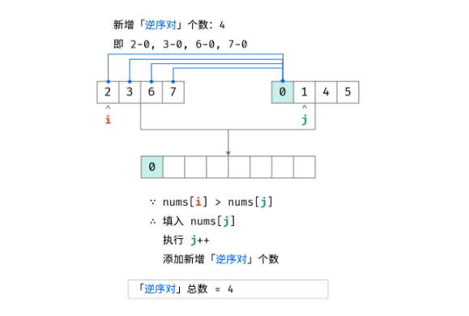

26. 剑指 Offer 30. 包含min函数的栈(简单)
-
双栈：一个栈存储数据，一个栈存储最小值
class MinStack: def __init__(self): self.stack=[] self.minstack=[inf] def push(self, x: int) -> None: self.stack.append(x) self.minstack.append(min(x,self.minstack[-1])) def pop(self) -> None: self.stack.pop() self.minstack.pop() def top(self) -> int: return self.stack[-1] def min(self) -> int: return self.minstack[-1]
27. 剑指 Offer 31. 栈的压入、弹出序列
-
模拟：按顺序push，若和popped值相等，则pop，最后判断栈是否为空。
class Solution: def validateStackSequences(self, pushed: List[int], popped: List[int]) -> bool: stack,i=[],0 for num in pushed: stack.append(num) while stack and stack[-1]==popped[i]: stack.pop() i+=1 return not stack
28. 剑指 Offer 32 - II. 从上到下打印二叉树 II(简单)
-
BFS
class Solution: def levelOrder(self, root: TreeNode) -> List[List[int]]: if not root: return [] ans,queue=[],[root] while queue: tmp=[] for i in range(len(queue)): node=queue.pop(0) tmp.append(node.val) if node.left: queue.append(node.left) if node.right: queue.append(node.right) ans.append(tmp) return ans
29. 剑指 Offer 33. 二叉搜索树的后序遍历序列
-
递归：找到第一个大于列表末尾(根节点)的位置，即为左右子树划分的点；判断右子树序列中是否所有节点都大于根节点(
p==j)class Solution: def verifyPostorder(self, postorder: List[int]) -> bool: def recur(i,j): if i>=j: return True p = i while postorder[p]<postorder[j]: p+=1 m=p while postorder[p]>postorder[j]: p+=1 return p==j and recur(i,m-1) and recur(m,j-1) return recur(0,len(postorder)-1) -
单调栈：
- 将后序遍历的序列倒序，即为
根|右子树|左子树； - 此时对于升序
arr[i+1]>arr[i]，i+1一定是i的右节点； - 对于倒序
arr[i+1]<arr[i]，i+1是某节点root的左节点，且root为0~i中大于且最接近i+1的节点。- 单调栈存储升序节点
- 遇到降序节点时，通过出栈来更新root
- 若arr[i]>root: 返回false；若arr[i]<root，满足定义，继续遍历
class Solution: def verifyPostorder(self, postorder: [int]) -> bool: stack, root = [], float("+inf") for i in range(len(postorder) - 1, -1, -1): if postorder[i] > root: return False while(stack and postorder[i] < stack[-1]): root = stack.pop() stack.append(postorder[i]) return True - 将后序遍历的序列倒序，即为
30. 剑指 Offer 34. 二叉树中和为某一值的路径(中等)
-
回溯：
class Solution: def pathSum(self, root: TreeNode, target: int) -> List[List[int]]: ans,path=[],[] def dfs(node,s): if not node: return s+=node.val path.append(node.val) if s==target and not node.left and not node.right: ans.append(path[:]) dfs(node.left,s) dfs(node.right,s) path.pop() dfs(root,0) return ans
31. 剑指 Offer 35. 复杂链表的复制(中等)
-
拼接链表：
- 第一次遍历构建
原节点1-->新节点1-->原节点2-->新节点2的链表； - 第二次遍历构建新链表的random指向：
old.next.random = old.random.next - 第三次遍历拆分原/新链表
class Solution: def copyRandomList(self, head: 'Node') -> 'Node': if not head: return None p=head while p: node = Node(p.val) p.next,node.next=node,p.next p=p.next.next p=head while p: if p.random: p.next.random = p.random.next p=p.next.next ans=p=head.next while p.next: p.next = p.next.next p=p.next return ans - 第一次遍历构建
-
哈希表：构建原链表节点和新链表节点的映射关系，
dic[old]=newdic[old].next = dic[old.next]dic[old].random = dic[old.random]
class Solution: def copyRandomList(self, head: 'Node') -> 'Node': if not head: return None dic,p={},head while p: dic[p]=Node(p.val) p=p.next p=head while p: dic[p].next = dic.get(p.next,None) dic[p].random = dic.get(p.random,None) p=p.next return dic[head]
32. 剑指 Offer 36. 二叉搜索树与双向链表(中等)
-
中序遍历：记录前驱节点和当前节点，
self.pre.right,cur.left=cur,self.preclass Solution: def treeToDoublyList(self, root: 'Node') -> 'Node': def dfs(node): if not node: return None dfs(node.left) if self.pre: self.pre.right,node.left=node,self.pre else: self.head=node self.pre=node dfs(node.right) if not root: return None self.pre=None dfs(root) self.pre.right,self.head.left=self.head,self.pre return self.head
33. 剑指 Offer 37. 序列化二叉树(困难)
-
层序遍历：反序列化时采用BFS和一个
idx指针，idx指针指向的分别是当前节点的左节点和右节点class Codec: def serialize(self, root): if not root: return "None" res = [] queue=[root] while queue: node = queue.pop(0) if node: res.append(str(node.val)) queue.append(node.left) queue.append(node.right) else: res.append('N') return ','.join(res) def deserialize(self, data): if data=='None': return None data,i = data.split(','),1 root=TreeNode(int(data[0])) queue=[root] while queue: node=queue.pop(0) if data[i]!='N': node.left=TreeNode(int(data[i])) queue.append(node.left) i+=1 if data[i]!='N': node.right=TreeNode(int(data[i])) queue.append(node.right) i+=1 return root
34. 剑指 Offer 38. 字符串的排列
-
回溯：
dfs(idx)表示固定idx位置的字符；用dic=set()记录当前位置已经使用过的字符，达到剪枝的目的；遍历idx到len(lst)-1位置，依次将其固定至idx位置。class Solution: def permutation(self, s: str) -> List[str]: lst,ans=list(s),[] def dfs(idx): if idx==len(lst)-1: ans.append(''.join(lst)) return dic=set() for i in range(idx,len(lst)): if lst[i] in dic: continue dic.add(lst[i]) lst[i],lst[idx]=lst[idx],lst[i] dfs(idx+1) lst[i],lst[idx]=lst[idx],lst[i] dfs(0) return ans
35. 剑指 Offer 39. 数组中出现次数超过一半的数字(简单)
-
哈希表统计：用哈希表统计各数字出现的次数
-
数组排序法：排序后的数组中点为众数
-
摩尔投票法：票数正负抵消
class Solution: def majorityElement(self, nums: List[int]) -> int: ans,cnt=-1,0 for num in nums: if cnt==0: ans=num cnt+=1 if ans==num else -1 return ans
36. 剑指 Offer 40. 最小的k个数(简单)
-
排序或者冒泡k次
-
堆：时间复杂度
O(nlogk)，空间复杂度O(k)import heapq class Solution: def getLeastNumbers(self, arr: List[int], k: int) -> List[int]: if k==0: return [] heap=[-x for x in arr[:k]] heapq.heapify(heap) for i in range(k,len(arr)): if -arr[i]>heap[0]: heapq.heappushpop(heap,-arr[i]) return [-x for x in heap] -
基于快排：每次划分得到哨兵的下标
idx，若刚好等于k，则返回arr[:k]，否测递归划分import random class Solution: def getLeastNumbers(self, arr: List[int], k: int) -> List[int]: def partition(nums,l,r): idx = l+random.randint(0,r-l) nums[idx],nums[l]=nums[l],nums[idx] ll,rr=l+1,r while True: while ll<=rr and nums[ll]<nums[l]: ll+=1 while ll<=rr and nums[rr]>nums[l]: rr-=1 if ll>rr: break nums[ll],nums[rr]=nums[rr],nums[ll] ll,rr=ll+1,rr-1 nums[l],nums[rr]=nums[rr],nums[l] if rr==k: return arr[:k] elif rr<k: return partition(arr,rr+1,r) else: return partition(arr,l,rr-1) if k>=len(arr): return arr return partition(arr,0,len(arr)-1)
37. 剑指 Offer 41. 数据流中的中位数(困难)
-
堆：用一个最小堆和最小堆存储数据，最大堆存储数据流左半部分数据，最小堆存储右半部分数据，保证
len(heapL)-len(heapR)<=1。当两个堆长度相等时，中位数为两个堆顶的均值，否则为最大堆的堆顶值。import heapq class MedianFinder: def __init__(self): self.heapl=[] self.heapr=[] def addNum(self, num: int) -> None: if not self.heapl or -num>=self.heapl[0]: heapq.heappush(self.heapl,-num) if len(self.heapl)-len(self.heapr)>1: tmp = -heapq.heappop(self.heapl) heapq.heappush(self.heapr,tmp) else: heapq.heappush(self.heapr,num) if len(self.heapl)<len(self.heapr): tmp = heapq.heappop(self.heapr) heapq.heappush(self.heapl,-tmp) def findMedian(self) -> float: if len(self.heapl)>len(self.heapr): return -self.heapl[0] return (-self.heapl[0]+self.heapr[0])/2
38. 剑指 Offer 42. 连续子数组的最大和(简单)
-
动态规划：
dp[i]为以i结尾的最大子数组和，最终返回max(dp)class Solution: def maxSubArray(self, nums: List[int]) -> int: s,n=0,len(nums) dp=[] for num in nums: dp.append(s+num) s=max(0,dp[-1]) return max(dp)可以压缩存储空间如下：
class Solution: def maxSubArray(self, nums: List[int]) -> int: s,n=0,len(nums) ans = -inf for num in nums: ans = max(ans,s+num) s=max(0,s+num) return ans
39. 剑指 Offer 43. 1～n 整数中 1 出现的次数(困难)
-
数学，枚举：将数字n分为高位
high，当前位cur，低位low，以及位因子digit。统计某位中1出现的次数，分类讨论如下：- 当
cur=0：hight x digit，以2304为例，其出现1的范围为0010~2219，即229-0+1=230次； - 当
cur=1：high x digit + low + 1，以2314为例，其出现1的范围为0010~2314，即234-0+1=235次； - 当
cur=2,3,...,9：(high+1) x digit，以2374为例，出现1的范围为0010~2319，即239-0+1=240次。
class Solution: def countDigitOne(self, n: int) -> int: ans=0 high,cur,low,digit=n//10,n%10,0,1 while high or cur: if cur==0: ans+=high*digit elif cur==1: ans+=high*digit+low+1 else: ans+=(high+1)*digit high,cur,low,digit=high//10,high%10,low+cur*digit,digit*10 return ans - 当
40. 剑指 Offer 44. 数字序列中某一位的数字(中等)
-
迭代+求整/求余：

- 确定n所在的数字的位数digit：循环执行n减去一位数，两位数。。。的数位量count，直到
n<=count； - 确定n所在的数字num：
num=start+(n-1)//2； - 确定n是num种的哪一数位，返回结果：
srt(num)[(n-1)%digit]
class Solution: def findNthDigit(self, n: int) -> int: start,digit,cnt=1,1,9 while n>cnt: n-=cnt start,digit=start*10,digit+1 cnt=start*digit*9 num = start+(n-1)//digit return int(str(num)[(n-1)%digit]) - 确定n所在的数字的位数digit：循环执行n减去一位数，两位数。。。的数位量count，直到
41. 剑指 Offer 46. 把数字翻译成字符串(中等)
-
动态规划：若
s[i-1:i+1]位于10~25之间，则可以翻译在一起，此时dp[i]=dp[i-1]+dp[i-2]，否则dp[i]=dp[i-1]class Solution: def translateNum(self, num: int) -> int: s = str(num) n=len(s) dp=[1,1]+[0]*(n-1) for i in range(1,n): if s[i-1] in ['1','2'] and int(s[i-1:i+1])<26: dp[i+1]=dp[i]+dp[i-1] else: dp[i+1]=dp[i] return dp[-1]
42. 剑指 Offer 47. 礼物的最大价值(中等)
-
动态规划
class Solution: def maxValue(self, grid: List[List[int]]) -> int: m,n=len(grid),len(grid[0]) dp=[[0 for _ in range(n+1)]for _ in range(m+1)] for i in range(1,m+1): for j in range(1,n+1): dp[i][j]=max(dp[i-1][j],dp[i][j-1])+grid[i-1][j-1] return dp[-1][-1]
43. 剑指 Offer 48. 最长不含重复字符的子字符串(中等)
-
双指针+哈希表：哈希表记录字符最右的位置，当遍历到哈希表中存在的字符时，更新i为
max(i,vis[s[j]])，每次计算最长长度j-iclass Solution: def lengthOfLongestSubstring(self, s: str) -> int: vis,ans,i={},0,-1 for j in range(len(s)): if s[j] in vis: i=max(i,vis[s[j]]) vis[s[j]]=j ans=max(ans,j-i) return ans
44. 剑指 Offer 49. 丑数(中等)
-
最小堆：每次取出堆顶元素x，然后将
2x,3x,5x加入堆中，用哈希表去重，最后返回堆顶元素import heapq class Solution: def nthUglyNumber(self, n: int) -> int: factors = [2,3,5] heap,vis=[1],{1} for i in range(n-1): curr = heapq.heappop(heap) for factor in factors: nxt = curr*factor if nxt not in vis: vis.add(nxt) heapq.heappush(heap,nxt) return heapq.heappop(heap) -
动态规划：设置p2,p3,p5三个索引，
dp[i]=min(dp[p2]*2,dp[p3]*3,dp[p5]*5)，独立判断dp[i]与这三个值的大小关系，若相等则将相应的索引+1class Solution: def nthUglyNumber(self, n: int) -> int: dp=[1]*n p2,p3,p5=0,0,0 for i in range(1,n): n2,n3,n5=dp[p2]*2,dp[p3]*3,dp[p5]*5 dp[i]=min(n2,n3,n5) if dp[i]==n2: p2+=1 if dp[i]==n3: p3+=1 if dp[i]==n5: p5+=1 return dp[-1]
45. 剑指 Offer 50. 第一个只出现一次的字符(简单)
-
有序哈希表：
OrderedDict()class Solution: def firstUniqChar(self, s: str) -> str: dic = collections.OrderedDict() for c in s: dic[c] = not c in dic for k,v in dic.items(): if v: return k return ' '
46. 剑指 Offer 51. 数组中的逆序对(困难)
-
归并排序：在归并排序的合并阶段，每当遇到
左子数组当前元素>右子数组当前元素，意味着左子数组当前元素至末尾元素与右子树组当前元素构成了若干逆序对class Solution: def reversePairs(self, nums: List[int]) -> int: def merge(l,r): if l>=r: return 0 m=l+(r-l)//2 res = merge(l,m)+merge(m+1,r) tmp[l:r+1]=nums[l:r+1] i,j=l,m+1 for k in range(l,r+1): if i==m+1: nums[k]=tmp[j] j+=1 elif j==r+1 or tmp[i]<=tmp[j]: nums[k]=tmp[i] i+=1 else: nums[k]=tmp[j] res+= m-i+1 j+=1 return res tmp=[0]*len(nums) return merge(0,len(nums)-1)
47. 剑指 Offer 52. 两个链表的第一个公共节点(简单)
-
双指针：当指针为空时，转移到另一个链表表头；当两个指针相遇时，即为第一个公共节点
class Solution: def getIntersectionNode(self, headA: ListNode, headB: ListNode) -> ListNode: pA,pB=headA,headB while pA!=pB: pA=pA.next if pA else headB pB=pB.next if pB else headA return pA